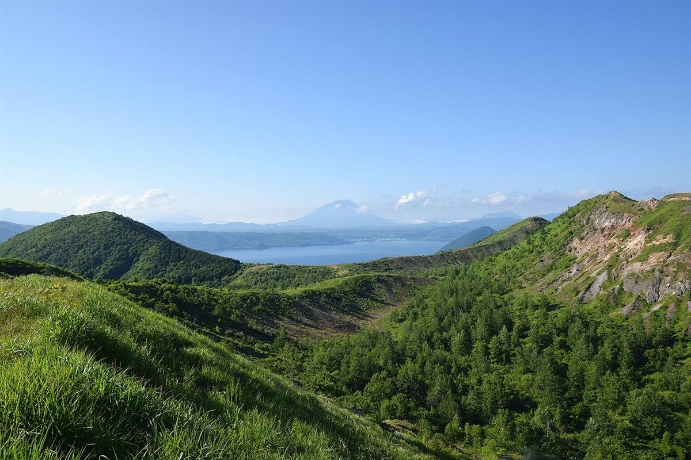
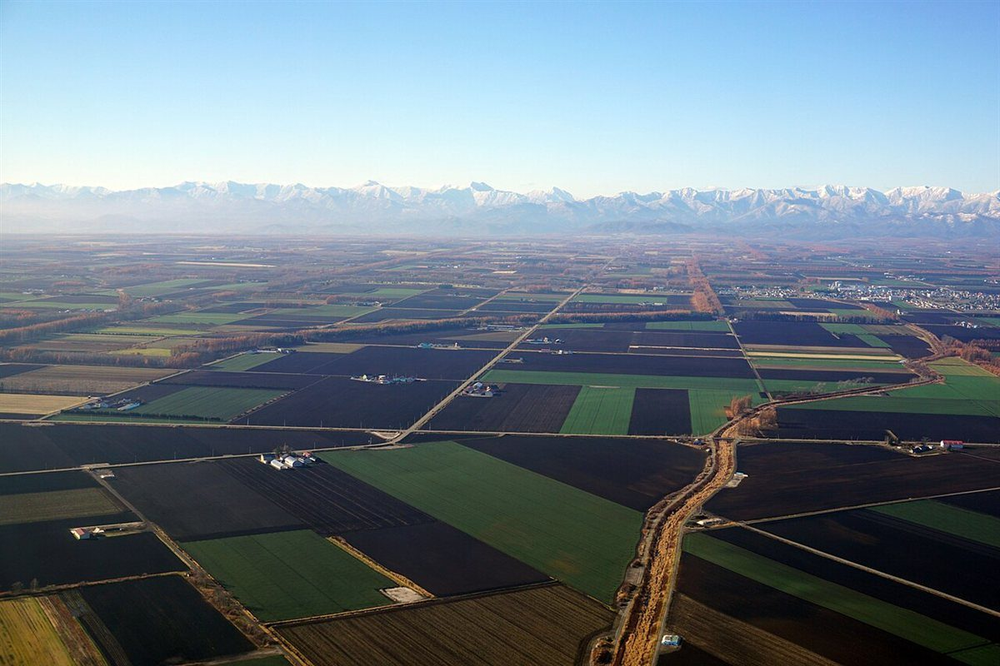

お店について
基本情報
| 店名 | 紅茶のとびら |
|---|---|
| 所在地 | 富山県氷見市朝日丘8-3878-1 |
| 電話 | 0766-74-1920 |
| @kouchanotobira | |
| 営業時間 | 準備中(お問い合わせください) |
| 定休日 | 準備中(お問い合わせください) |
| 席数 | 準備中(お問い合わせください) |
| 駐車場 | 準備中(お問い合わせください) |
制作側の案
このページの方針は、制作側の案です。お店のお考えではありません。
制作側の案は、「必要なことが迷わず見つかる、静かな案内ページ」です。確認できた情報から順に、分かりやすく載せていくことを想定しています。
掲載予定の項目
- スタッフ紹介
- 準備中です。
- こだわり
- 準備中です。
- お店の歴史
- 準備中です。
内容はお店に確認のうえで掲載します。

